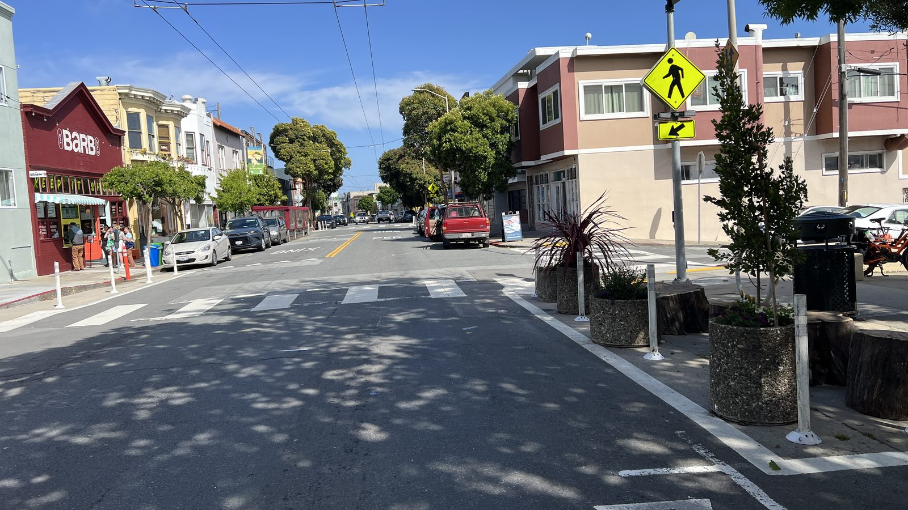
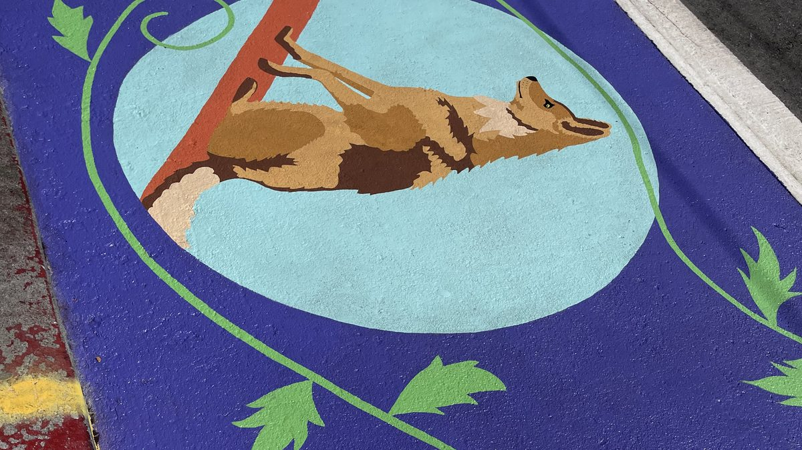
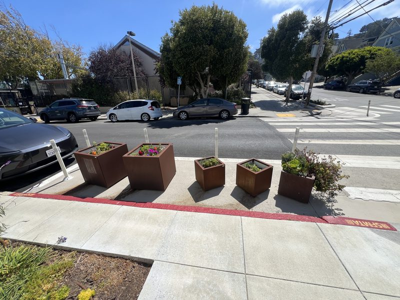
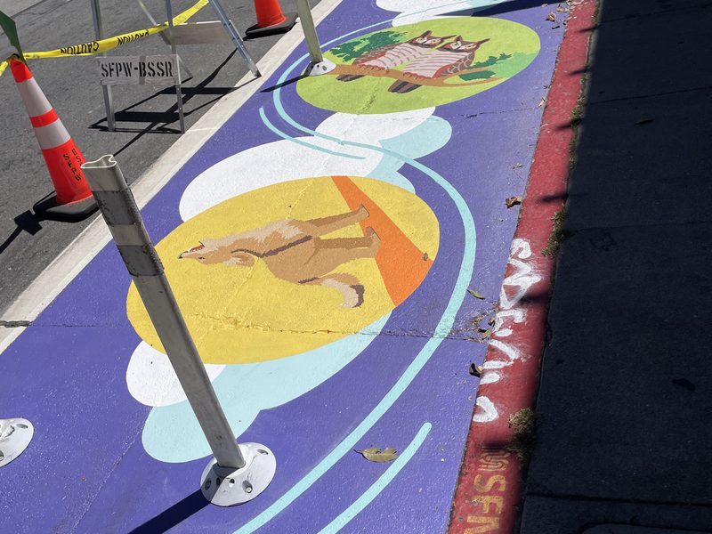
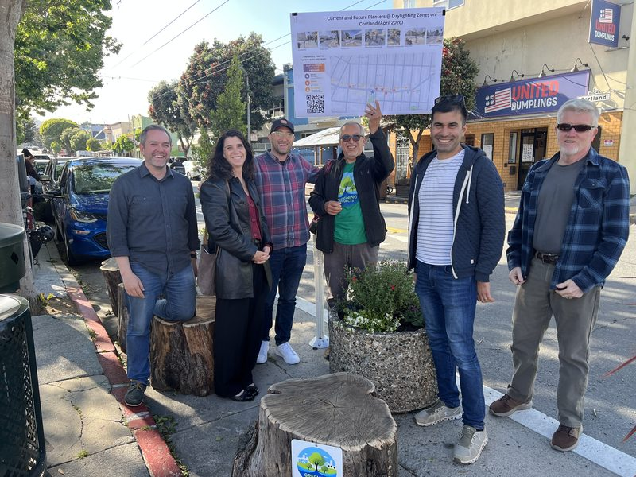
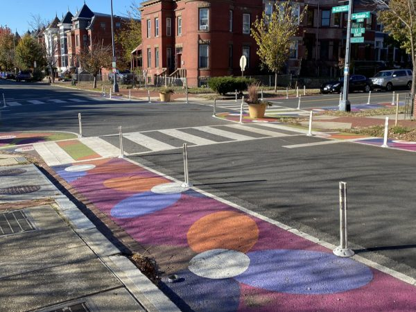
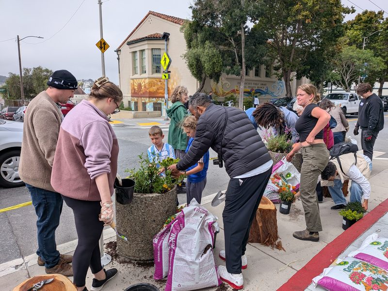
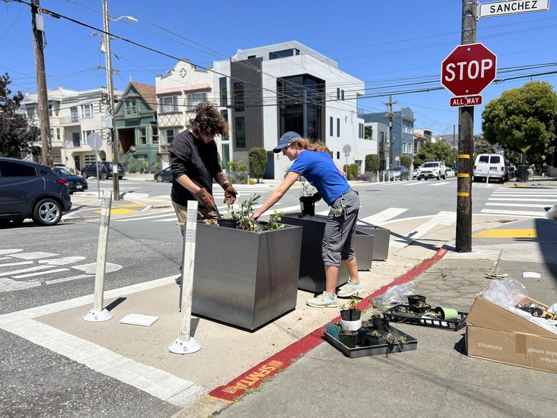
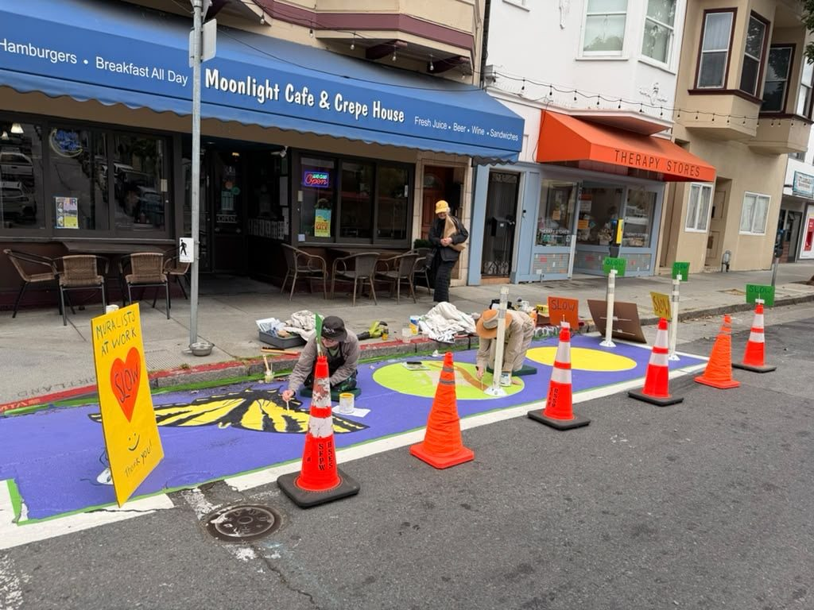

Safer
Clear corners mean a driver can see a kid stepping off the curb. It's not a small thing: about 13% of city streets see 75% of San Francisco's severe and fatal crashes. Daylighting is one of the cheapest ways to fix that.

Every neighborhood now has newly open corners where the curb stays clear for safer crossings. SF Community Corners lets your block turn that space into something beautiful, with planters and murals.
What is it?
By state law, cars can't park in the 20 feet right before a crosswalk anymore. It's called daylighting, and it lets drivers and people walking actually see one another. That law just opened up thousands of small, sunny patches of street.
Community Corners is a two-year City pilot that lets neighborhood groups adopt one of those patches (a Painted Safety Zone) and fill it with low planters or a hand-painted street mural. The result is a corner that's easier to cross and a little more loved.

Why it matters
Clear corners mean a driver can see a kid stepping off the curb. It's not a small thing: about 13% of city streets see 75% of San Francisco's severe and fatal crashes. Daylighting is one of the cheapest ways to fix that.
Native plants, pollinators, and a splash of color where there used to be a parked bumper. Small gardens add up to a leafier, more resilient, more San Francisco neighborhood. Part of a citywide greening push led by Green SF Now.
These corners are designed, planted, and cared for by the neighbors who live there. It's a hands-on way to take pride in your block and meet the people on it.
SF Community Corners is part of the City's broader push for safer streets, alongside Mayor Lurie's Street Safety Initiative, the Board of Supervisors' Street Safety Act, and California's daylighting law (AB 413). It's run by the SFMTA's Safety Zone Program.
See it
Real corners from Bernal Heights, Noe Valley, and the Mission. Send us yours as your corner comes to life.

Low planters that keep sightlines clear. Fill them with drought-tolerant natives, or whatever your block loves to grow.

A painted corner that says this is our block: local wildlife on Anderson Street, designed with neighbors and approved by the Arts Commission.

SFMTA's first demonstration corner in District 9 showed how neighbors and the City can build one together.

Cities like Hoboken, NJ have daylighted every intersection and watched crashes fall. Washington, DC paints its corners, too.
Photo: Greater Greater Washington

A Saturday morning, a few bags of soil, and a corner full of neighbors. Kids welcome; that's the point.

Planters, soil, and a couple of hours: neighbors setting up a new corner on Sanchez Street.
How to get one
Look for a calm, stop-sign corner on a low-traffic street: no bus stop, no tow-away lane. The curb space right before the crosswalk is the spot.
Team up with a local nonprofit, neighborhood or merchants' association, or an adjacent business willing to sponsor and insure the corner. A handful of motivated neighbors can form or join one.
Your corner needs a Painted Safety Zone: the red curb and white-painted no-parking box. SFMTA is prioritizing corners that already have one (check the City's Painted Safety Zone map, linked from the application). If yours doesn't and it's not on a Slow Street, your group will need extra drawings and a licensed contractor to paint one first. On a Slow Street? Email CommunityCorners@sfmta.com; the Slow Streets Program may be able to install it.
Your group fills out SFMTA's online registration form (about 15 minutes; a photo of the corner helps). The program has a $50 registration fee, and registration lasts a year and renews annually.
Install your planters or mural to the design rules below. Then water, weed, and keep it tidy. The corner is yours to look after.
Ready to go?
Apply on SFMTA's registration portal ↗
Still building your team? Join our list for tips and updates →
Good to know
The design standards exist for one reason: keep the corner visible. Everything below protects the sightline that makes daylighting work.
Nearside of a daylit intersection, on a low-volume street (under ~2,000 vehicles/day), at a stop sign. No bus stops or tow-away zones.
Planters no taller than 24 inches; the plants in them kept under 36 inches. Low enough to see over, into and across.
No benches, platforms, parklet-style builds, or other vertical obstructions in the zone; they block visibility. Planters and murals only, and planters stay movable (not bolted down) unless the City specifically authorizes it.
Street murals are welcome but can't mimic traffic markings or carry advertising, and must be approved by the SF Arts Commission.
Stay 5 ft from a standard fire hydrant (7.5 ft from a big one), 2 ft from utilities, and never attach anything to poles, signs, or trees.
Your group waters, weeds, cleans, removes graffiti, and keeps the gutter clear. It also agrees to hold the City harmless. It's a real commitment.

This is a friendly summary, not the official rulebook. For exact requirements see the SFMTA program documents.
Questions
You can still do it. The City is mapping existing and planned safety zones, and registering at one of those is the easiest path. If your corner doesn't have one, the program lets your group install a safety zone at your own expense (hiring a licensed contractor to paint it). It just takes a bit more time and planning.
Not by yourself. The application asks for a sponsoring organization, such as a nonprofit, a community benefit district, or a local neighborhood group. The practical move is to partner with a group that already exists on your block, or gather a few neighbors and join/form one. Plenty of corners start exactly that way.
The City's registration fee is $50. Beyond that, your group covers your own materials (planters, plants, soil, paint) and ongoing upkeep. Planters also require an insurance policy; murals don't. If your corner needs a new Painted Safety Zone, that's an added cost too. Looking for funding? See Green SF Now's grant roundups.
Registration is valid for one year and renews annually. The pilot itself runs for two years, after which the SFMTA decides whether to continue it.
This advocacy effort is supported by a growing coalition of neighborhood, street-safety, and greening groups across San Francisco. See the full list under Supported by. (Want your group listed? Get in touch.)
No. This is a community-run site that explains the SFMTA's Community Corners pilot in plain language and helps neighbors get involved. For official rules, forms, and the latest details, always check the SFMTA program documents below.
Supported by
SF Community Corners is championed by neighborhood, street-safety, and greening groups across the city. Want your group listed? Get in touch.
Stay in the loop
Registration is open now. Leave your email and we'll send occasional updates: tips for applying, grant and funding news, planting days, and other program milestones. No spam, ever.